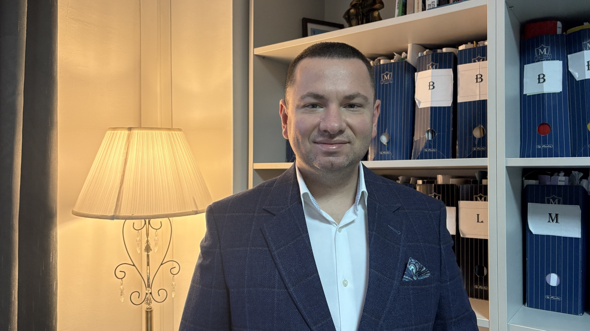

Timp de 20 de ani am alergat de la o sală de judecată la alta, crezând că nimic nu mă poate opri. Apoi, la 36 de ani, viața m-a oprit cu forța. Diagnosticul: Parkinson.
Trăiesc între doze de medicamente — de 4–5 ori pe zi. Nu vindecă, doar țin simptomele în frâu câteva ore. Fiecare zi e o luptă: cu mine, cu boala, cu privirile celor din jur.
Ce nu mi-a luat boala: mintea. Iar în avocatură, mintea cântărește totul. Profesia mă ține viu, treaz, util.
„Eu am Parkinson. Dar Parkinson nu mă are pe mine."
Donează
